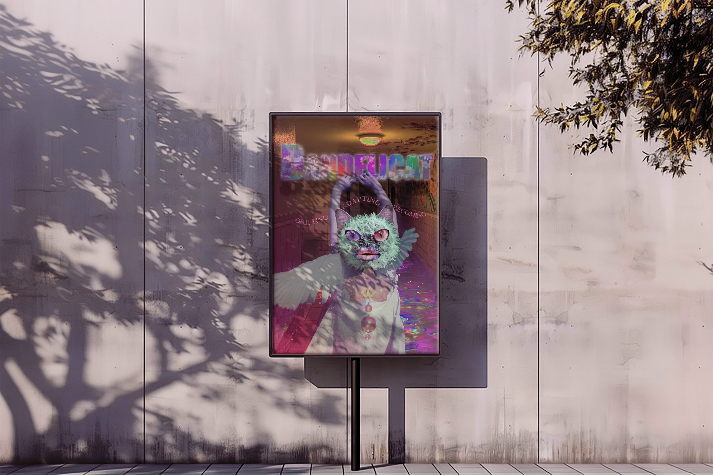

Graphic Design / 2025
Dandelicat Poster
A Photoshop poster extending the Dandelicat thesis world into a surreal, print-based visual artifact.

About the Poster
This poster was created as part of the Dandelicat visual world, combining dreamlike collage, surreal character design, and layered visual symbolism.
The piece translates Dandelicat’s themes of drifting, adapting, and becoming into a graphic format, using Photoshop compositing, texture, color, and typography.
Tools: Adobe Photoshop
Poster in Context
